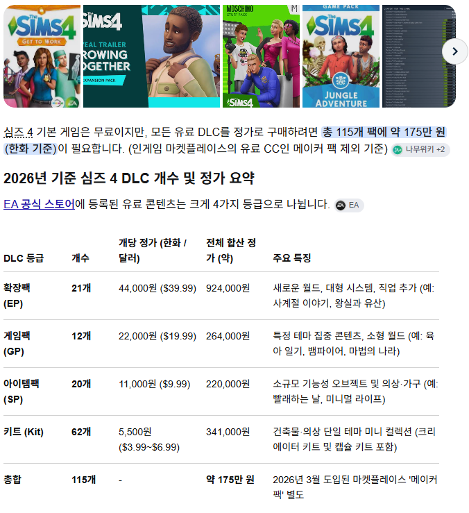

필수 확장팩만 90만원 넘어가고
의자, 전자기기 같은거나 들어있는 아이템 팩이랑 키트가 개당 가격이 악랄해서 무시무시함

필수 확장팩만 90만원 넘어가고
의자, 전자기기 같은거나 들어있는 아이템 팩이랑 키트가 개당 가격이 악랄해서 무시무시함
게임으로서는 비싸지만 취미로서는 싼값임 수집이나 꾸미기류의 취미라고 보면 됨
취미생활로 10년동안 100만원이면 뭐 그럴수 있는거지
예전에 찾아보기로 본편은 무료로 많이 뿌려서 그거만 받고 디엘시 팩 불법으로 받아서 디엘시등록해주는거 하면 다적용된다더라
심즈를 안해서 되는지는 모름
그게 반복돌이라는건데
본편 무료로 받으면 공짜임
본편깔고 프로그램하나로 올dlc활성화 버튼하나로 딸깍가능함
아직도됌 심지어 본편이 정품이라 창작마당 비슷한거도 이용가능함
패러독스사 게임도 유명하지
패러독스는 지들도 이딴겜을 30만원 주고 사라고하긴 좀 아니다 싶었는지 구독제 생김
스팀에서 공짜로 준 본편만 스팀에 있음 ㅋㅋㅋ
걍 할인할때 사든가 해야하려나. 디맥도 dlc 포함 전곡 온전히 즐긴다거나, 데바데 모든 dlc 산다거나 할인 없으면 이것들도 가격 오지게 오르긴함.
심지어 용량도 100기가 정도 먹을꺼임ㅋㅋㅋ
당 장 복 돌 구 매
Dlc의 사악함 탑은
레일웍스로 시작한 트레인 시뮬레이터임
나온지 17년쯤 Dlc풀로 구매하면 천만원쯤 됨 ㅋㅋㅋ
가챠겜에 저거 이상 트럭 박은사람들 많을텐데 역시 bm이 중요해
ㅋㅋㅋ 예전에 하던 농구게임 캐릭 하나 뽑으려면 30만원이었은데 최근엔 업글 생기고 5번 뽑아야 풀 업글이라 엄청 비쌈...
뭐가 낫다고 생각해?
2만원 내면 새로 나온 옷 무제한 이용하기 vs 20만원 내도 새로 나온 옷 못 뽑을 수 있는 뽑기 시스템
뭐가 맞는지는 모르겠지만 후자를 고르는 애들이 많더라고 ㅋㅋ
소비자들 대다수가 후자를 원함
출시때부터 샀으면 월정액이라 괜찮은데
중간에 들어가기가 어렵네
DLC 장사 노골적인 패키지 게임 혐이긴 한데
그런데 웬만한 가챠겜 앞에선 저것도 ㅈㄴ 범부
모바일게임에서 인권과금이라는 월 1만원짜리 패스랑 비슷한수준임
심즈는 없어도 플레이에 전혀 지장없는 것들
심즈는 뭐 유구한 전통이지
할인받아서 살거아녀
한번 해보려다 dlc장사하는거 보고 심즈는 포기했음...
다 큰 남자가 심즈를 왜 하냐
나온지 24년 다되가는데 1000만원도 모자른 김치겜에비하면 뭐 ...
전자기기 의자요??? 호오...그런 겜인가..
그래서 대다수는 불법으로..